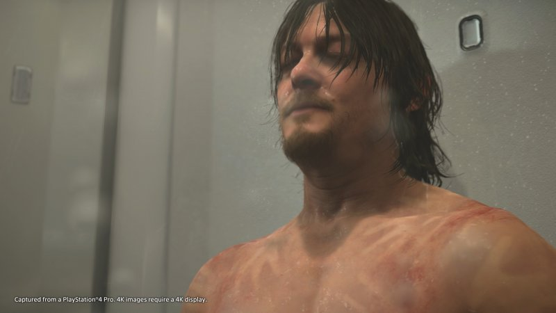
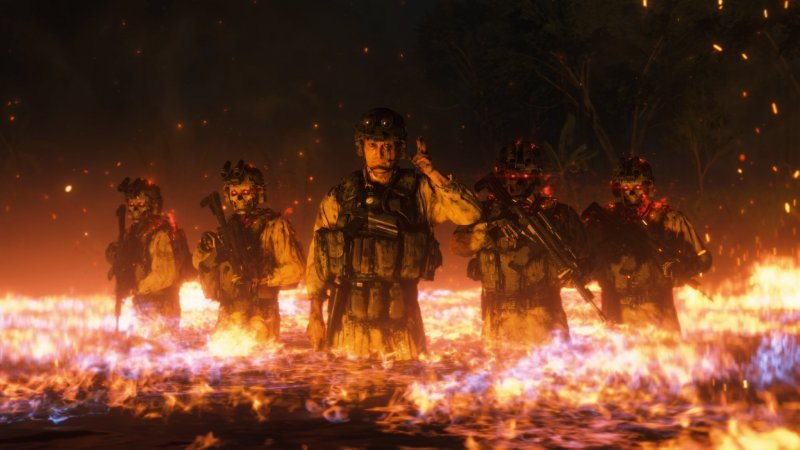
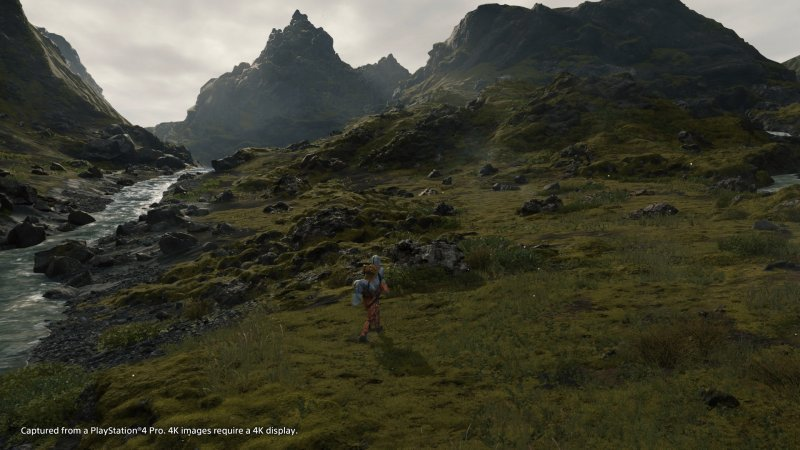
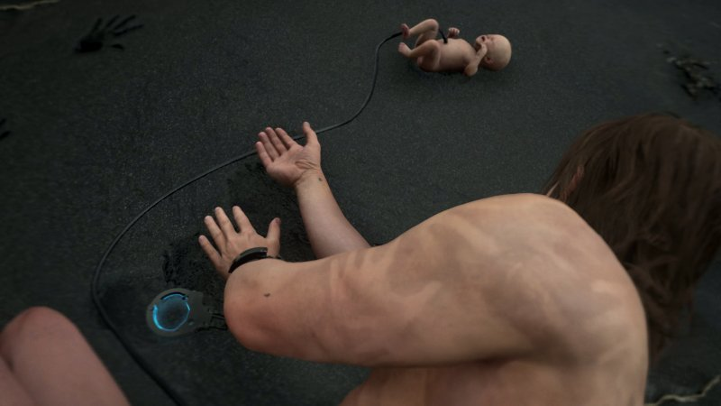

Dead Stranding, la recensione - PS4
La recensione di Death Stranding: dopo tre anni di misteri e domande arriva su PS4 l'ultima opera, ma anche un po' la rinascita di Hideo Kojima. È davvero rivoluzione?
RECENSIONE di Enrico Salmaso - 04/12/2019

INDICE
Raccogliere la responsabilità e l'emozione di scrivere la recensione di Death Stranding, uno dei videogiochi più chiacchierati della storia di questo medium, è quanto di più "spaventoso" ed elettrizzante possa accadere in questo lavoro. Che facciate parte degli adoratori o dei detrattori di Hideo Kojima e del suo operato, non vi è comunque dubbio che l'uscita allo scoperto di Death Stranding su PS4 rappresenti un evento importante, che è necessario leggere nella maniera più onesta possibile. Death Stranding non è un prodotto perfetto, né tantomeno un'esperienza adatta a tutti. Al contrario richiede al giocatore di calarsi in una serie di meccaniche simulative spesso dedite ad un target ben specifico e lontano dalla massa. Alla luce della poca inclusività che ne deriva, il voto che trovate in calce può rispondere appieno al vostro gusto, o richiedere invece un aggiustamento, sia esso per eccesso o per difetto. Abbiamo giocato, vissuto, analizzato e ragionato a lungo su questo giudizio e per noi è giunto il momento di giustificarvelo. La speranza è quella di essere riusciti a trasmettervi tutte le nostre considerazioni.
La nostra storia: il Death Stranding
Già normalmente lo faremmo con qualsiasi titolo, ma è ancor più naturale iniziare a giudicare un nuovo videogioco del maestro Kojima partendo dalla trama messa in piedi dall'autore della saga di Metal Gear Solid, premurandoci di non rivelare neanche un singolo dettaglio che possa mettere a repentaglio il gusto della scoperta ad ognuno di voi. Ciò che è utile capire riguardo all'incredibile immaginario che fa da sfondo all'opera, è che la discretamente lunga campagna di comunicazione del gioco, fatta di trailer cinematografici pazzescamente realizzati, ha volutamente reso l'intreccio più difficile di quanto non sia. Il grande merito della trama di Death Stranding è proprio quello di parlare a tutti, con grande semplicità ed altrettanta maestria, senza però abbassare mai l'asticella della ricerca narrativa, del linguaggio e della regia . È profetico non perché ci catapulta in qualcosa di mai visto o raccontato - anzi al contrario presenta svariati punti di contatto con un'opera lontana nel tempo e sconnessa dal videogioco, che per ovvie ragioni non citeremo - ma perché affronta tematiche attuali e ricercate con un piglio e un immaginario totalizzante. La spiaggia, i Bridge Baby, le Creature Arenate, i protagonisti della storia e l'atmosfera cupa che si è sempre respirata in questi tre anni di speculazioni, rappresentano solo la punta di un profondissimo iceberg che tenta di parlare a tutti noi, cerca disperatamente di raggiungere un barlume di positività e di speranza in un futuro buio, oscuro e nero come il catrame che disegna solchi su tutta la terra di Death Stranding.
 Torna all'indiceGameplay: è davvero un simulatore di corriere
Togliamoci immediatamente il dente: sì, Death Stranding è esattamente ciò per il quale è stato deriso e schernito online negli ultimi diciotto mesi, ovvero un simulatore di corriere. Lo è a tal punto da scegliere di assegnarvi una valutazione per ogni singolo carico portato a destinazione, che si tramuta in un numero specifico di like e una crescita di connessione effettuata con uno delle decine e decine di "clienti" che incontreremo sulla nostra strada. La valutazione e i like ottenuti sono utili a salire anche in un'ipotetica classifica dei migliori corrieri d'America, con un livello complessivo che è raggiunto sommando la crescita in ognuna delle principali categorie di trasporto. Consci di questi elementi di base, è importante capire che ognuna delle centinaia di consegne scritte appositamente dal team di sviluppo, ha la caratteristica di portarvi a compiere un viaggio che deve essere bilanciato e pensato, sia dal punto di vista del carico scelto, che poi anche del percorso che si vuole compiere per arrivare a destinazione. Fin dal primo iconico momento del gioco, che arriva a seguito di una sequenza di immagini tecnicamente superba e stilisticamente vicina a ciò che abbiamo recentemente visto al cinema con Blade Runner 2049, ciò che resta impressa è la fisicità di Sam. Prenderne il controllo significa sentire restituito un feedback dei controlli come poche altre volte è successo in passato. La minimale interfaccia a schermo ci ricorda solo di mantenere l'equilibrio sui pendii scoscesi o quando ci si sbilancia a seguito di un movimento inconsulto. Se poi è possibile utilizzare la classica X per saltare o il cerchio per abbassarsi, a lasciare il segno è la scoperta dell'indipendenza delle singole braccia, ognuna demandata al rispettivo grilletto. Questo elemento, tanto semplice quanto funzionale, consente al ritmo di gioco di assestarsi sempre su quella percezione simulativa dello sforzo e della fatica umana, che è poi anch'esso metafora del viaggio che noi, insieme a Sam, siamo chiamati a compiere. Inoltre fin dalla prima consegna di farmaci intelligenti compiuta nella prima ma non la più estesa delle macro aree che fungono da riproduzione del continente americano, si presenta anche l'accompagnamento musicale a collaborare alla scoperta delle lande desolate e incontaminate di un mondo ormai tornato allo stato primordiale. Questi sono elementi che affiancano l'incedere del protagonista e che non possono, per nessun motivo al mondo, essere estrapolati dall'esperienza riducendola ad un mero "camminare nel nulla".
 Torna all'indiceOstacoli sul cammino
Abbiamo cercato di trasmettervi quelle che sono le sensazioni che si provano giocando alla nuova esclusiva temporale per PlayStation 4, Death Stranding. A fianco però delle percezioni esiste poi un impianto ludico fondato anche sugli ostacoli presenti sul cammino di Sam. Questi rispondono principalmente a due categorie: le Creature Arenate e gli altri esseri umani ostili. Non abbiamo modo di parlarvi di nulla di ciò che il gioco inserisce in termini di situazioni e meccaniche dopo il terzo capitolo e questo ci limita nel descrivervi gli approcci, ma vogliamo comunque rassicurarvi sul fatto che Death Stranding resti sempre fedele a sé stesso. Nonostante una crescita di ritmo, alcuni innesti di gameplay più lineari e circoscritti e una percezione importante della mutazione del mondo nel quale ci troviamo, la possibilità di parlarvi delle prime trentacinque ore della nostra partita (tanto sono durati i primi tre capitoli) sono sufficienti a spiegarvi a grandi linee ciò che vi troverete ad affrontare. Vogliamo che sia chiaro a chiunque abbia voglia di approcciare Death Stranding, che si tratta di un'avventura dalla durata media profondamente differente in base alla tipologia di giocatore. Ciò non toglie che il consiglio spassionato è quello di non fermarsi ai cosiddetti "ordini per Sam", ovvero l'equivalente delle missioni principali. Per quanto accessori possano risultare, gli incarichi secondari si rivelano fondamentali per portare avanti quella progressione di cui abbiamo parlato, la quale permette di apprezzare davvero un impianto di gioco altrimenti molto più piatto di quanto non si possa credere. Affrontare un tratto di strada a piedi risulta profondamente diverso dal farlo in moto, esattamente come ancor più particolare si presenta il trasporto al proprio seguito di un piccolo hovercarro in grado di sorreggere decine di carichi. Queste differenze rappresentano già di per sé una maturazione della componente simulativa importante e riuscita, ma che poi raggiunge il suo apice quando affiancata alla presenza dei MULI o delle Creature Arenate. I primi non brillano per intelligenza artificiale, ma ciò non toglie che si concretizzi molto in fretta la loro natura quasi accessoria, al punto da diventare prede della nostra furia distruttiva nel caso si decida di generare un "cratere". Inoltre il carico portato in spalla e la volontà di recuperare oggetti smarriti, possono tramutare un semplice scontro in un inferno, dal quale potrete uscire menando le mani o utilizzando uno dei tantissimi gadget a disposizione. a disposizione. Sam può infatti equipaggiarsi con una miriade di armi ed oggetti diversi, sempre caricati su sé stesso tenendo ben presente il peso e la posizione di ognuno, ma che possono fare la differenza tra la vita e la morte.
 Torna all'indiceIl più vivo mondo vuoto di sempre
Non possiamo concludere questo lunghissimo viaggio con Death Stranding tralasciando quello che è l'aspetto tecnico della produzione. A proposito di questo vi rimandiamo anche ad un video specificatamente dedicato a questo argomento, ma in questa sede siamo comunque chiamati a trasmettervi quanto più possibile la nostra "mascella caduta a terra". Sotto il profilo visivo Death Stranding è un'esperienza difficilmente replicabile altrove, che utilizza in maniera magistrale il Decima Engine di Guerriglia Games (dopo avergli donato ufficialmente un nome) elevandolo all'ennesima potenza. Il lavoro congiunto dei due team, che ha in qualche modo riavvicinato nei tessuti e nella gestione dei liquidi all'ormai "dimenticato" Fox Engine, ha permesso di ricreare un mondo al limite del fotorealismo. Sfruttando senza dubbio anche tecniche di fotogrammetria in paesi incontaminati come l'Islanda, ciò che si staglia d'innanzi agli occhi del giocatore è un mondo vivo e naturalisticamente primordiale, che tende a dimenticare la sua natura postapocalittica in talune situazioni e si spinge nella ricerca del selvaggio, dell'inesplorato. Anche in questo viene in aiuto la fisicità di cui avevamo già parlato, mettendo sul piatto un andamento sempre coerente di Sam sulle diverse tipologie di terreno, che mostra sì il fianco nella gestione delle rocce e delle animazioni di passaggio su di esse, ma che trova ampiezza e ariosità nelle lunghe distese dei campi e nell'incedere stanco e affaticato dei picchi montani.
 Torna all'indiceVALUTAZIONE
PRO
- Gameplay simulativo straordinario
- Tecnicamente è fuori scala
- La narrazione è quanto di più maturo Kojima abbia mai realizzato
- Il multiplayer asincrono sa regalare grandi gioie
CONTRO
- Il sistema di combattimento è opinabile
- Fin troppo semplice e per alcuni risulterà ripetitivo e senza mordente
COMMENTO FINALE
Death Stranding arriva sul mercato con la potenza di un pugno nello stomaco, a chiudere un intero anno fatto di tantissimi bei videogiochi e due autentiche opere d'arte. Abbiamo citato Red Dead Redemption 2 in apertura proprio perché, seppure profondamente diversi per accezione, volontà di espressione e tematiche, tutti e due possono essere considerati figli di una stessa, straordinaria, volontà: quella di innalzare il videogioco allo stato dell'arte, all'opera a tutto tondo che si spoglia dell'accezione spesso troppo negativa di "gioco" e che si veste, invece, con uno splendido abito da sera fatto di emozioni e comunicazione, senza per questo tralasciare un gameplay stimolante e divertente, a patto di amare i simulatori. Abbiamo volutamente tralasciato tanto, evitato di entrare nei dettagli delle tematiche trattate e dei risvolti narrativi, sui quali ci sarà modo di discutere a lungo. Ci è sembrato giusto tentare, tramite questa recensione sentita e sofferta, di farvi vivere prima di tutto quello che noi stessi abbiamo provato giocando Death Stranding, al netto di tutte quelle piccole o meno piccole imperfezioni che lo rendono umano, tanto quanto quella razza che la sua storia vuole redimere. È incredibile pensare come l'essenza stessa di questo titolo sia ricercabile nelle primissime frasi che vengono menzionate ed è per questo e per elementi come l'inquadratura finale, che ci sentiamo di consigliare Death Stranding a tutti, esattamente come accaduto un anno fa. Questo lo affermiamo consapevoli che, esattamente come in quella occasione, tanti potrebbero gettare la spugna. Se farete parte di quei pochi interessati anche ad altro che al veloce tornaconto, troverete in Death Stranding uno specifico equilibrio e quel profetico e reiterato "non siamo pronti" si tramuterà automaticamente in entusiasmo costante. È d'altronde tutta una questione di tempo investito e di sensazioni generate, così come il tempo risulta tematica cardine del gioco, resa parte integrante della storia e del gameplay tramite la cronopioggia.